使用该节点可通过 Mandelbrot 集为模型设定纹理。Mandelbrot 集是复杂平面中的数学点集合，其边界是一个有趣的分形。通过此节点，您可以选择 Mandelbrot 集、Julia 集、Mandelbox 集以及其他混合解算。使用此节点，您可以在 Mandelbrot 集分形中添加有趣的效果，如圆形、叶、点、棋盘格图案和 Pickover 茎。在不同的着色方法中进行选择，并自定义用于表示 Mandelbrot 集点的颜色值范围。
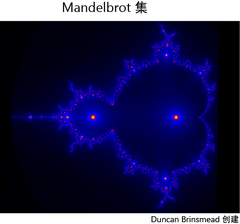
您可以创建此节点的 2D 版本、3D 版本 (Mandelbrot 3D) 或使用内置的 Mandelbrot 纹理对 fluidShape 节点着色。
在“创建”(Create)选项卡中找到此纹理。若要作为纹理贴图应用该纹理，请参见映射 2D 或 3D 纹理。
注： 当前，仅可以使用 Maya 软件渲染器渲染 Mandelbrot 纹理。
关于 Mandelbrot 纹理
Mandelbrot（及其相关的集）基于迭代求值。它表示复杂平面区域 zn+1 = zn2 + c，您需要从 0 = 0 开始，并且在 Zn 的绝对值保持在界内时不断进行迭代。
换句话说，如果 UV 空间中有一个点，而您要确定该点是否在区域内，则可以对该点迭代执行函数（即，获得函数的输出后，再次应用该函数，如此重复进行）并检查其值。如果该值保持在逃逸半径内，则不管迭代次数有多少，其都在区域中。否则，如果值超出逃逸半径，它就在区域的外部。
下图说明了根据点在 UV 空间的不同位置所呈现出的不同迭代行为。如果点接近区域边界，则会执行许多次迭代，并形成一个重复模式，但它们会保持在距原点的固定距离内。但是，该点位于区域内部或外部时，迭代过程会产生非常简单的曲线。
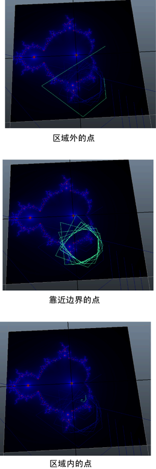
可以在若干着色方法中进行选择。如果仅根据点是在区域内部或外部进行着色，则仅会生成一个双色纹理。但是，您可以根据函数逃逸或稳定的速度（换句话说，就是根据执行的迭代次数）来着色。其他方法包括：计算迭代过程中点在 UV 空间中遵循的路径（或动态观察），并使用该路径的不同特性将颜色映射到点（例如，计算路径与原点或者 U 或 V 轴的接近程度）。
在远离集的边界的位置，着色变化非常缓慢，因为彼此接近的点沿相似的路径移动。但是，在接近边界的位置，彼此接近的点可能在迭代过程中具有完全不同的路径，并且会出现分形着色模式。
对于某些其他更复杂的分形，Maya 会在开始迭代前重新映射 UV 空间（使用其他非线性函数）。Maya 将另一个纹理映射到 Mandelbrot 集时，Maya 会计算要缩放和旋转的路径的方向和速度，以及该点处纹理的层副本。
Mandelbrot 属性
-
Mandelbrot 类型(Mandelbrot Type)
- 在以下四个分形求值类型中进行选择：
- Mandelbrot 集(Mandelbrot Set)：这是标准 Mandelbrot 集。如果选择“Mandelbrot 3D”节点，则“Mandelbrot 集”(Mandelbrot Set)会创建 Mandelbulb。
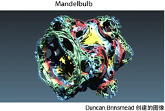
- Mandelbox：这是具有类似形状的框的分形，与“Mandelbrot 集”(Mandelbrot Set)共享多个特性。该求值类型执行递归折叠操作来创建有趣的几何图案。与通过“Mandelbrot 集”(Mandelbrot set)创建的形状相比，使用该求值类型创建的形状看起来不太自然且有更多的人工痕迹。使用“长方体半径”(Box Radius)、“长方体最小半径”(Box Min Radius)和“长方体比率”(Box Ratio)属性可控制其求值。
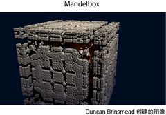
- Julia 集(Julia Set)：使用此求值方法可创建漩涡自相似图案。使用“Julia U”和“Julia V”属性可控制其形状。标准“Mandelbrot 集”(Mandelbrot Set)包含所有可用的 Julia 集，将 Julia 集的“Julia U”和“Julia V”属性映射到输入 UV 位置。
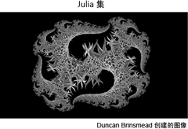
- 带 Julia 集的长方体(Box with Julia Set)：这是 Julia 集函数和 Mandelbox 函数的组合。它是集迭代过程对集的镜像或折叠。通过改变 Mandelbox 参数以及“Julia U”和“Julia V”属性，可以获得多种不同的图案。
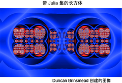
- 带 Mandelbrot 集的长方体(Box with Mandelbrot Set)：该选项将“Mandelbox”和“Mandelbrot”函数组合在一起。
-
Mandelbrot 着色方法(Mandelbrot Shade Method)
- 在用于 Mandelbrot 结构的不同着色选项中进行选择。
- 经典(Classic)：着色基于超出逃逸半径前执行的总迭代次数。
- 平滑(Smooth)：与经典集类似，但提供迭代之间的平滑颜色过渡，以避免出现条带。
- 最小半径(Minimum Radius)：着色基于所有迭代中的最小半径。
- 逃逸半径(Escape Radius)：着色基于最终迭代中的半径。
- 仅线(Lines Only)：仅绘制点、茎和圆，且未设定背景。
-
Mandelbrot 内部方法(Mandelbrot Inside Method)
- 在不同的选项中进行选择，为属于集中的区域着色基础 Mandelbrot 集。
- 零(Zero)：将集内区域设定为固定的零值。
- 最大迭代(Max Iteration)：通过最大迭代（即颜色渐变右侧最远处的索引）着色集内部的区域。这在用作置换贴图时与内部边匹配。这是函数收敛的区域。
- 内部着色(Shaded Inside)：根据半径对内部值执行平滑着色处理。点、圆和茎都绘制在内部。
- 不带线着色(Shaded Without Lines)：根据半径对内部值执行平滑着色处理，但点、圆和茎仅绘制在外部。
- 直线(Lines)：在内部应用点、圆和茎，但不进行其他任何着色。
- 仅内部线(Inner Lines Only)：在内部应用点、圆和茎，而不应用到集外部的区域。
-
缩放因子(Zoom Factor)
- 使用该属性可设定放大级别。实际缩放是 2 的“缩放因子”(Zoom Factor)次幂。因此，“缩放因子”(Zoom Factor)为 2 时会创建值为 4 (2 * 2) 的缩放，而“缩放因子”(Zoom Factor)为 3 时会创建值为 8 (2 * 2 * 2) 的缩放。这会产生统一的缩放率。
- 中心 U(Center U)、中心 V(Center V)
- 设定 UV 坐标的视图中心。0 到 1 的范围重映射为 0 到 100 的范围，以便更好地进行控制。对于“Mandelbrot 3D”节点，将使用 X、Y、Z 坐标。
- 精细偏移 U(Fine Offset U)、精细偏移 V(Fine Offset V)（仅用于 Mandelbrot 2D 节点）
- 该属性可相对于缩放对“中心 U”(Center U)和“中心 V”(Center V)位置进行偏移，从而在高缩放级别下提供更好的控制。
-
深度(Depth)
- 使用该属性可确定创建 Mandelbrot 纹理所执行的计算量。分形纹理通过迭代数学过程创建。更多的迭代次数会产生更详细的分形，但需要更多的计算时间。“深度”(Depth)值越高，就越能更好地解算 Mandelbrot 集的边界区域。放大分形时，需要较大的“深度”(Depth)值，以获得更好的精度和细节。
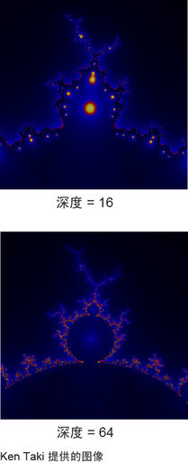
-
光锥(Lobes)
- 确定 Mandelbrot 集分形中的光锥数量。标准 Mandelbrot 集是 2 的幂并产生 1 个光锥。增加该值可创建更多的光锥。您可以使用较高的“光锥”(Lobes)设置来获得更好的 Mandelbulb 结果。
-
逃逸半径(Escape Radius)
- 超出“逃逸半径”(Escape Radius)时将停止迭代。对于经典 Mandelbrot 集，请使用值 2（或更高）。但是，对于集中的某些变量，较多的迭代次数可能会很有用。使用棋盘格效果时，较大的值会创建更紧密的条带。小于 2 的值也可以用于创建有趣的效果。
-
叶效果(Leaf Effect)
- 使用该属性可以创建叶子。
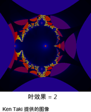
-
方格
- 使用该属性可以创建交替图案。使用“逃逸半径”(Escape Radius)可确定棋盘格图案的紧密程度。使用介于 0 和 0.5 之间的值可获得最佳效果。
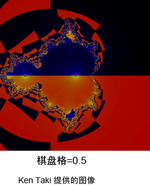
-
点(Points)
- 使用该属性可创建点。“线偏移 U”(Line Offset U)和“线偏移 V”(Line Offset V)属性可控制点的位置。缩小“聚焦”(Focus)可获得更宽广的点。
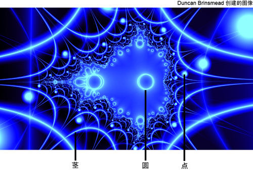
-
圆(Circles)
-
使用该属性可以在每个迭代内创建一个圆。
-
圆半径(Circle Radius)
- 控制圆的大小。
-
圆大小比率(Circle Size Ratio)
- 控制圆半径更改每个迭代的速率。例如，如果该比值小于 1，则圆在每个迭代处都将变小。使用该属性可获取圆大小的范围。
- 茎 U (Stalks U)、茎 V (Stalks V)
- 使用这些属性创建 Pickover 茎。Pickover 茎的创建方式是：使用距“U 和 V”(U and V)轴的距离创建类似茎的结构。使用这些属性可以移动轴位置。
- 线偏移 U (Line Offset U)、线偏移 V (Line Offset V)
- 使用这些属性可移动点和茎的位置。
-
线偏移比率(Line Offset Ratio)
- 该属性可控制线偏移更改每个迭代的速率。“线偏移 U”(Line Offset U)和“线偏移 V”(Line Offset V)值必须非零，该属性才能生效。偏移将乘以每个迭代中的比率。如果比率大于 1，则每个迭代处的偏移都会增加。如果比率小于 1，则每个迭代处的偏移都会降低。
-
线焦点(Line Focus)
- 该属性可控制圆线和茎线的锐度。该值增加时，它们会变细。
-
线融合(Line Blending)
- 该属性会在圆、点和茎之间创建平滑连接。调整该效果时，您可能需要增加聚焦。
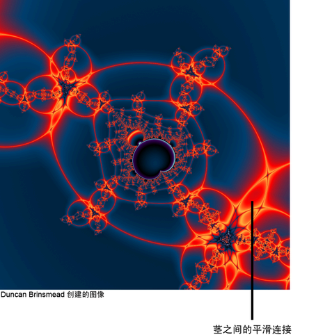
- Julia U、Julia V
- “Julia U”是具有复杂编号的第一个组件，而“Julia V”是具有复杂编号的第二个组件或假设组件，用于定义 Julia 集。它们结合在一起，形成复杂平面的图标。
完整的 Mandelbrot 集会自动将该坐标设定为 UV 坐标，因此其包含所有可用的 Julia 集。但是对于 Julia 集，您必须指定该坐标。
-
长方体半径(Box Radius)
- 使用该属性可以设定 Mandelbox 的每个迭代中的主半径和混合解算类型。
-
长方体最小半径(Box Min Radius)
- 使用该属性可以设定 Mandelbox 的每个迭代中的最小半径和混合解算类型。
-
长方体比率(Box Ratio)
- 使用该属性可控制每个迭代中的半径缩放量，以便确定迭代之间的大小比率。这也称为缩放属性。
-
聚焦(Focus)
- 聚焦可确定颜色映射到集的紧密程度。对于特写缩放，较大的聚焦有助于使颜色更接近集的边界。使用环游映射（请参见环游映射(Orbit Mapping)）时，聚焦也会影响颜色渐变的映射，并且您可以使用该属性控制颜色随深度变化的速率。
-
偏移(Shift)
- 在为颜色贴图创建索引之前，“偏移”(Shift)会对 Mandelbrot 函数的输出值进行偏移。对偏移进行动画设置可以为颜色流设置动画。
-
振幅(Amplitude)
- “振幅”(Amplitude)先乘以 Mandelbrot 函数的输出值，然后再将其映射到 Alpha 和颜色渐变。如果振幅很大，则某些值可能会位于渐变范围之外。这些值将基于“包裹振幅”(Wrap Amplitude)属性进行钳制或包裹。该包裹在创建仅具有很少渐变索引的许多条带时非常有用。
-
包裹振幅(Wrap Amplitude)
- “包裹振幅”(Wrap Amplitude)可启用 Mandelbrot 值大于 1.0 的包裹。如果幅度很高，这可使渐变重复，从而产生仅具有很少渐变索引的许多条带。
颜色
使用该区域可定义颜色值的范围（渐变），Mandelbrot 函数输出值将重新映射到该范围。
-
选定位置(Selected Position)
- 指活动颜色条目在渐变中的位置。
-
选定颜色(Selected Color)
- 指活动颜色条目的颜色。
-
插值(Interpolation)
-
指控制颜色在渐变中的融合方式。默认为“线性”(Linear)。
-
无：表示无插值；不同的颜色在最终纹理中显示为不同的条带。
-
线性(Linear)：值在 rgb 颜色空间中对值进行线性插值。
-
平滑(Smooth)：沿着钟形曲线对值进行插值，渐变中的每种颜色将填充其周围的区域，然后快速融合至下一种颜色。
-
样条线(Spline)：它将考虑相邻折射率，以实现更平滑的效果。
值
使用该区域可定义 Alpha 值的范围（渐变），Mandelbrot 函数输出值将重新映射到该范围。
-
选定位置(Selected Position)
- 渐变中的活动条目的位置。
-
选定值(Selected Value)
- 表示活动条目的值。
-
插值(Interpolation)
-
控制中间值的计算方法。默认为“线性”(Linear)。
-
无(None)：表示无插值；不同的值在最终纹理中显示为不同的条带。
-
线性(Linear)：对值进行线性插值。
-
平滑(Smooth)：沿着钟形曲线对值进行插值，渐变中的每个值将填充其周围的区域，然后快速融合至下一个值。
-
样条线(Spline)：它将考虑相邻折射率，以实现更平滑的效果。
-
环游贴图(Orbit Map)（仅用于 Mandelbrot 2D 节点）
- 使用该功能可以将纹理映射到集的每个迭代的局部空间。您应使用具有 Alpha 的纹理，并在映射的纹理上禁用 UV 包裹。如果使用 UV 包裹，则应将覆盖设定为小于 1，并使用平移使贴图居中。此外，可以使用“线偏移 U”(Line Offset U)和“线偏移 V”(Line Offset V)值以更好地定位纹理。
-
环游映射(Orbit Mapping)
-
- 禁用：不存在纹理设置。
- 从前到后(Front to Back)：使用环游贴图，并且前期迭代会显示在前面。
- 从后到前(Back to Front)：使用环游贴图，并且后期迭代会显示在前面。
注： 使用
“从前到后”(Front to Back)映射时，较大的
“逃逸半径”(Escape Radius)可能导致前期迭代（大图像在前）遮挡后期迭代（较小图像在后）。但是，对于
“从后到前”(Back to Front)映射，由于较小的细节图像（晚期迭代）在前面，这不是问题。因此，可以将较大的
“逃逸半径”(Escape Radius)与
“从后到前”(Back to Front)映射结合使用。
“染色”(Tint)
环游贴图上色方法对于提供对比度以更好地查看后期迭代的精细细节，可能会非常有用。有关详细信息，请参见
逃逸半径(Escape Radius)。
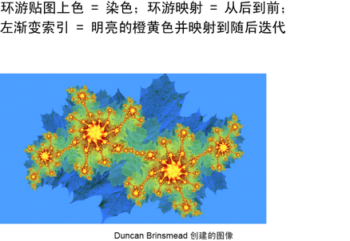
-
环游贴图上色(Orbit Map Coloring)
-
通过环游贴图上色，您可以根据迭代深度为动态观察纹理上色。
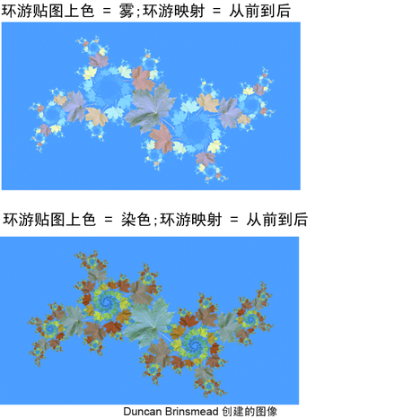
-
雾(Fog)：逐渐融合到颜色渐变值。如果使用“从前到后”(Front to Back)映射，则前期迭代（较大的图像）会显示在前面，并映射到纹理颜色。后期迭代（较小的图像）显示在后面，并映射到右渐变索引。如果使用“从后到前”(Back to Front)映射，则前期迭代（较大的图像）会显示在后面，并映射到右渐变索引。后期迭代（较小的图像）显示在前面，并映射到左渐变索引。
- 染色(Tint)：将纹理的颜色与渐变颜色相乘。对于灯光染色，请选择接近白色的渐变颜色。
-
内爆(Implode)
- “内爆”(Implode)会围绕“内爆中心”(Implode Center)定义的点，以同心方式包裹 Mandelbrot 函数。值为零时，没有任何效果；值为 1.0 时，它是噪波函数的球形投影，可形成星光效果。负值可用于向外倾斜噪波（不是向内）。
-
内爆中心(Implode Center)
-
使用该属性可定义围绕其定义内爆效果的中心 UV 点（“Mandelbrot 3D”的 X、Y、Z 轴上的点）。